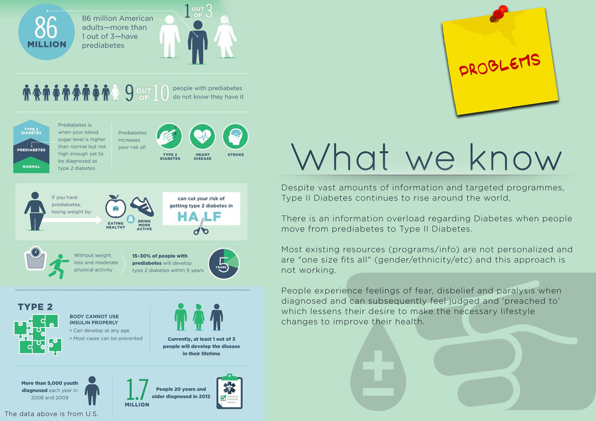

KIN
KIN enables trusted relationships through empathic encounters between a newly diagnosed person and someone who has been living with Type II Diabetes for a number of years, to provoke positive lifestyle changes that delay or reverse the development of their symptoms.
CHALLENGE
A human-centered, iterative and hands-on exploration on designing conversation-based services for (type II) diabetes management.
 Year: 2016 Project type: Design of a conversational based service using the Design Sprint approach developed by Google Ventures. Team members: Idoia Teran, Elisa Mombrini, Laila Simonovsky, Monsicha Plukpitakkul & Gina Garvey.PROCESS
A 5-day workshop that explored different tools, techniques and hands-on approaches to allow envisioning, future-proofing and testing different concepts. All the activities helped to quickly evaluate assumptions and reach the end of the week with a solid value proposition for their ‘conversational’ services.
Day 01 - Desk research and coming up with assumptions. Preparing for testing the assumptions and initial proposals/ideas in the following day by coming up with a set of questionnaire. Setting up of the Launchpad website prototype, which is a tool that was used to convey the inital idea of the service to the users.
Day 02 - Meeting people and gathering of feedback on the assumptions. Patient Groups were visited at a Hospital, email sent to various diabetes organisations. Plus questionnaires were sent through Typeform tool to various and one-on-one Skype interviews were carried out.
Day 03 - Feedbacks were clustered and findings were analysed to see what worked and what didn’t, what can be changed and what new assumptions could be made. Early ideas were tweaked and further developed for final narrative.
Day 04 - Consolidation of a final concept, through blueprinting and business modelling.
Day 05 - Working on final presentation and presenting the service through a one page website that captures the concept, hypothesis and overall idea.
SHOW MORE
OUTCOME
Kin is a service that focuses on improving management of (type II) diabetes. Kin hosts interest-based events which provides the opportunity for people with similar interests to meet and be matched! This allows the matched people to discuss about their common interests and use that as a starting point to talk about Diabetes.
Through the Kin buddy system, we match people in the physical world who have recently been diagnosed with Type II Diabetes with trained volunteers who also have the condition, by introducing them at organised events based on their mutual interests and passions.
Overall, Kin alleviates the shock patients feel after diagnosis to enable them to more quickly understand, accept and begin making positive changes through ongoing personal and empathetic support.